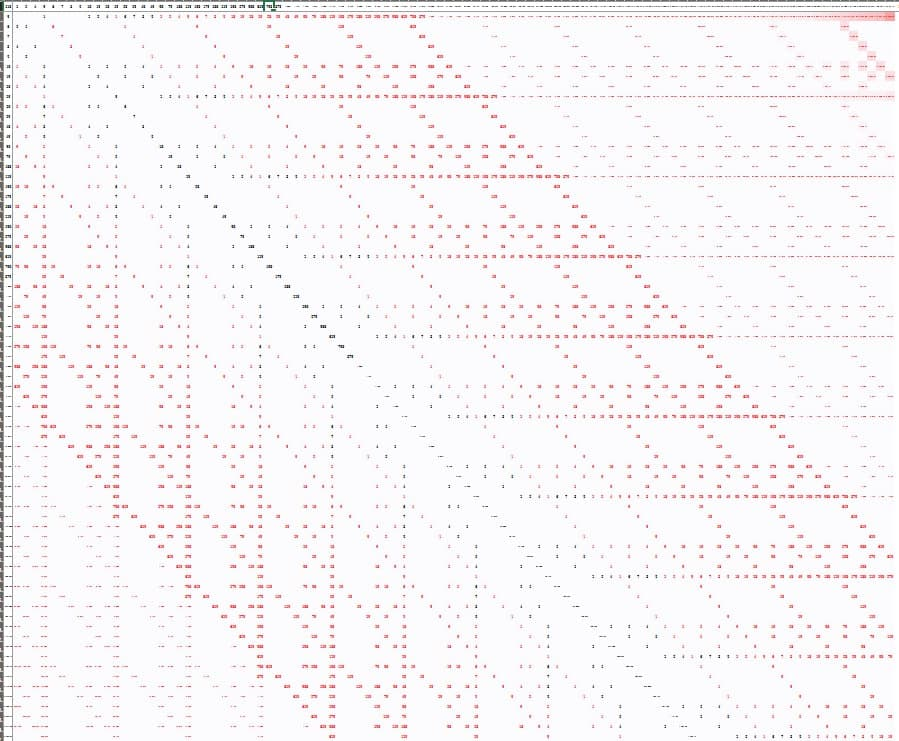

Арт. #AA18H от 17 августа 2021 г.
Все говорят, что мы вместе.
Все говорят, но не многие знают, в каком.
Друзья, эта статья написана преимущественно в терминах "правой линии" (Каббалы), но не смотря на это, я считаю ее публикацию на форуме в общей ветке уместной, поскольку то, о чем в ней написано - является одинаково важным для любых линий и "секторов" человечества, находящегося в состоянии "спиной к спине" пока что даже в том, что касается "истинных учений", к большому сожалению. Поэтому заранее отказываюсь от ответственности за такое положение дел, в котором объективно необходимо "нагружать" форум несвойственной воинам терминологией, не потому, что автор не умеет/не может найти подходящих слов и понятий у КК, а потому что у КК их нет объективно, а в Пути воинов они должны присутствовать для того, чтобы воин мог принимать важнейшие решения на этом Пути осознанно -, во что он "должен верить", а во что ему верить совсем не обязательно, как минимум, до момента личной проверки опытом. Я надеюсь, что читателю удастся "поймать" настроение, которое лежит в этих статьях глубже терминов и формулировок, и которое не зависит от используемого синтаксиса, чтобы эти статьи для него читались легко и приятно, доставляя удовольствие и оставляя ощущение не впустую потраченного времени. Сделаем и услышим!
Жизнь в этом мире существует в форме, являющейся одновременно Источником и Сутью Жизни, и Сознания (Разума). В этом Свете они неразличимо включены в одно и то же распространение их Источника, последовательно раскрываясь посредством этого, и создавая по мере такового раскрытия того, кто эти жизнь и сознание будет использовать в порядке и мере, характере и длительности, обуславливающего его существования физического энергоцикла, зависящего от Света Жизни, но не управляемого Им в той же самой форме, в Которой Он распространяется. Поскольку есть 3 принципиально разных типа включения и участия человека в вышеописываемый процесс на всех его стадиях:
1) Когда это включение является непосредственным результатом самого распространения, и происходит впервые с тем, кто был создан посредством этого “из ничего”
2) Когда это включение является результатом желания человека, не получать жизнь от эманаций, а отдавать ее эманациям (обществу, ближним) посредством “исправления своей природы” с получения на отдачу, о чем он и просит Творца, Свят Благословен Он, и Творец, Свят Благословен Он, поднимает его на ступень “до сотворения Мира” и позволяет пройти по всем стадиям собственного создания Творцом, Свят Благословен Он, “из ничего”, при этом человек, находящийся в сотрудничестве с Творцом, Свят Благословен Он, в совершении Им этого действия, оказывается относительно результата его произведения (человека этого мира) не первым, а вторым, а также относительно раскрытия Намерения его совершения Творцом, Свят Благословен Он, не первым, а вторым. Поэтому он получает первое внимание “исправленное” “бесплатным бонусом” ко второму, делая и то и другое инструментом осознанного служения Творцу, Свят Благословен Он, в котором есть 2 последовательные составные части: “Сделаем”, и “услышим!”, которые являются описанием порядка произведения действий воином^Исраэль, выполняющим в этом мире Волю Творца, Свят Благословен Он, и чья жизнь и судьба управляется Творцом, Свят Благословен Он, полностью осознанно, являясь для человека великой честью и благом. “Сделаем” – означает, что человек делает действие, не требуя от чего бы то ни было в момент его совершения сообщить ему о том, что именно это действие в его случае является Волей Творца, Свят Благословен Он, а не какое-то другое, как это всегда бывает в случае рассудка в повседневном мире. Вместо этого он выбирает первое попавшееся действие, которое ему кажется полезным и адекватным, и совершает его, уничтожая сомнения посредством угрозы раскрытия Творца, Свят Благословен Он, которое в “этом мире” является абсолютным оружием, способным безусловно творить или разрушать все что угодно по простому желанию. Это значит, что мир является сферой нашего восприятия, содержание и логика происхождения которого целиком и полностью зависит только от того, что мы делаем для того, чтобы заставить “эманации Орла” работать именно таким образом, поставляя человеку чувственные данные о реальном мире, и не давая ему возможности осознать собственную работу, в то время как другая “симметричная” часть эманаций Орла работает противоположным образом, давая человеку возможность уловить что-то “за завесой” тайны, некую чуть-чуть припорошенную загадку, которая будто бы выпрыгивает из-за сцены мироздания, но неизбежно ускользает от человека (во власть первой области, разумеется, а куда же еще). И этот порядок изменить человек уже не сможет, т.к. “его мир уже построен”, другой мир у него еще будет построен осознанно, если будет на то Милость Благословенного и Его Помощь и ведение на Пути Воина^Исраэль, но этот другой мир уже не будет выполнять задачи его собственного развития, становления, исследования, манифестации или реализации. Вместо этого он сам будет служить этому миру для того, чтобы он мог приобрести единственное недостающее им обоим (главным образом самому человеку, мир уже совершенен и исправлен во всем) – ступень “подобия свойств”, являющаяся личным опытом человека этого мира, соответствующим определенной раскрываемой им ступени реального Мира, и поэтому существует определенная последовательность, в которой человек, перед тем, как “удостоиться” высокой духовной ступени, обязательно проходит достаточный по полноте список этапов как личность этого мира, а без этого не будет иметь возможности подняться. В частности, речь про первый (как минимум) брак. Имея в виду при этом, что человек, если сложится судьба и ему удастся укрепиться на Пути, практически неизбежно в определенный момент (для него самого – чем раньше, тем лучше, хотя на все Воля Орла и Намерение Духа) примет решение уйти из семьи, поскольку невозможно совместить жизненный Путь человека, который слепо пользуется этим миром, не зная ни что он сам такое, ни что такое этот мир, по-тыркается по-тыркается и глупо умрет, ничего не достигнув, что имело бы для него самого хоть какой-то смысл и значение, и человека, который не просто знает, что такое этот мир и он сам, но который сам, вторично представ перед Намерением Духа, посредством Которого “этот мир”, равно как и любой другой такой же, приводится в движение, но уже имея опыт первой встречи с этим намерением, который он будет использовать как Кли (сосуд), уже один раз наполненный и затем опустошенный, что указывает на имеющуюся у него стадию зрелости к “взрослому” использованию посредством осуществления с ним половой любви, являющейся сутью Высшего Света в его “порождающем” (творения и души) аспекте и качестве, как Света Жизни, и Света Сознания, являющиеся величественной сутью и свидетельством непостижимо сильной и истинной Любви Творца, Свят Благословен Он, к Его творениям, поскольку Он дает им собственную Жизнь без какой-либо гарантии, и не ставя никаких условий по эксплуатации. Кроме этого,
3) Он предоставляет возможность использовать предстоящий этап накопления опыта “этого мира” для того, чтобы осознать свое предназначение и продолжить получать опыт, но уже на следующем, более “продвинутом” этапе “взрослого духовного состояния”, по сути становясь Агентом Влияния относительно этого мира со стороны Духовных миров Творца, Свят Благословен Он. Посредством этого служения человек теряет особенности своего строения по свойствам, которые обуславливают характерные для всех людей черты поведения и мышления, связанные с тем использованием, которое Сознание и Жизнь Творца, Свят Благословен Он, получают посредством реального достижения “получающих”, которые в целом называются человеческой формой. Ее потеря открывает человеку глаза на то, чем он сам и мир вокруг, и Жизнь и Сознание в нем, являются на самом деле, что он сам никогда не был живым, но только отраженный Свет Реальной Жизни он испытывал и привык, подобно всем остальным людям, называть этот Свет Жизнью того, кто отражает его, соединяясь с ним подобием свойств посредством опыта материальной формы жизни и способности первого внимания в обществе этого мира. Когда человек делает повторно то же самое действие, он выясняет, рано или поздно, что делать или не делать эманации тем, чем их делают обитатели мира – его свободный выбор, и предпочитает отныне и далее воспринимать их как конкретные физические нити сознательного Света, являющиеся “высокоскоростными коммуникационными линиями”, соединяющими Творца, Свят Благословен Он, и творения, поскольку тянутся во всех мыслимых направлениях из бесконечности в бесконечность через человека этого мира. Кроме двух вышеупомянутых качеств (Жизни и Сознания) эти Нити производят архитектурную композицию происхождения мира во времени, в соответствии с логикой Высшего управления Творца, Свят Благословен Он, творениями этого мира и Его Целью творения, заключающейся, так или иначе, в том, чтобы творения сами стали Реальными, как и Он Сам, и посредством слияния с Ним по способностям и возможностям, продолжили бы Его работу, создавая из ничего, и помогая достигать возвышенных высот Духа уже кому-то другому, и находя в этом смысл своего существования во Вселенной.
4) После того, как опыт восприятия посредством точки сборки был получен, закончен и переосознан при участии Духа как имеющий определенную последовательность, суть, фабулу и развитие, как набор абстрактных ядер магических историй о том, как Дух постепенно неотступно и безжалостно ведет человека от полного отсутствия признаков собственного бытия, до слияния в абсолютной независимой любви на равных. Посредством такового слияния, человеку открывается новый способ воспринимать мир. На этот раз знаком настройки будет половая любовь. Поскольку именно она является тем средством, которое используется во всех мирах для того, чтобы создавать из ничего подобных себе живых существ, обучая их всем необходимым навыкам для того, чтобы населять этот мир, подобно своим же родителям. Эта настройка также является набором магических историй1Кому есть дело до того, рассказывает ли историю маг-рассказчик, или ее рассказывает чей-либо жизненный опыт этого мира? Если история действительно имеет Печать Силы, то она обязательно с кем-то когда-то происходила, а скорее всего и не раз…. Однако, в отличие от прошлого этапа, когда он был личностью этого мира в обществе, являющемся ступенью “злого начала” относительно собственных участников, скрывая от них все, до чего могут дотянуться отвратительные зеленые распухшие пальцы своих энергоинформационных “заправил”, давно не существующих в первом внимании, но устроившихся, чтобы осуществлять его окормление и этим обеспечивать относительную стабильность функционирования, поскольку от ее сохранения начинает зависеть их собственный энергоцикл, то есть жизнь или смерть буквально. А, поверьте, умирать крайне обидно после того, как …дцать веков показывал смерти средний палец посредством новых и новых доноров смысла собственного существования, являющегося непревзойденным примером того, что значит “на зло Папе и Маме пойду отморожу на#%@% уши, голову, ноги, руки, половой член, живот, спину, и вот тогда-то они все поймут”. Маме и Папе фиолетово на пляски с шаманскими бубнами деревянных и оловянных кукол, все выступления которых сводятся к попыткам внушения самим себе, посредством “сарафанного радио”, идею о том, что их вечная жизнь, является естественным и само собой разумеющимся положением дел, о котором нет смысла даже особенно говорить или вспоминать. Не суть важно, является ли причиной этому органическая тупость (первое внимание), заставляющая вести себя подобно зашоренной лошади, которая не видит обрыва, с которого через 5 минут будет лететь, громко ржа и стуча копытами, чтобы еще через секунду разбиться насмерть, или этому причиной чрезмерное всезнайство (второе внимание), в случае которого определение с вечностью корректное формально, однако, оно не учитывает того, что никакие определения не распространяются на непостижимое, а, если говорить откровенно, если твоя теория рушится, когда опытные данные перестают попадать в какой-то узкий произвольно заданный диапазон, то эта теория выеденного банана не стоит, что, в случае древних видящих, начинает красноречиво подтверждаться именно в окрестностях нашего времени (поскольку их “вечность” связана с той Реальностью, в которой мы все жили как обезьянки с непомерно разросшимся мозгом и неадекватно следующими за ним по пятам амбициями и пустым самомнением), поскольку близится момент, когда их вечность подойдет к концу, а новый мир они построить уже не смогут, если только этим новым миром не окажется найденный специально для их странной формы участок в Мире Исправленном, кстати, он там очень даже есть, я думаю, поскольку новым “развивающимся расам” в этой Вселенной обязательно потребуются Силы, производящие работу “плохого полицейского”, в то время, как “хороший” ждет условленного момента своего появления, прячась за углом. Если такие Силы не задействовать в ходе первичного становления любого творения (частное и целое равны во всем, и являются одним и тем же, только на разных этапах завершенности своего происхождения), то оно никогда не сможет стать самостоятельным и благодаря этому “починить” канал передачи информации между ним и Духом лично, чтобы не быть ничьей другой ступенью и не зависеть ни от кого, кроме Него Самого, и соизмеряя свои действия, успехи и Цели на Пути с Ним и только с Ним.
5) Итак, посредством распространения Света с Его последующим исчезновением, Кли делается пригодным к тому, чтобы наполняться и опустошаться произвольным, Духу и человеку угодным и желательным, образом, являясь надежным вместилищем для определенного объема и качества Света Творца, Свят Благословен Он, при этом не находящимся в “самосопряженном” состоянии со своей же ступенью наполнения как “создаваемое из ничего Творцом, Свят Благословен Он, творение”, реагируя на изменения в наполнении изменением в поведении, причем, исключительно “бесталанным” образом, поскольку теряет все наполнение, которое приходит в него, создавая не случайное впечатление, будто производит именно это действие намеренно и полностью осознанно, чем “бесит” еще сильнее своих предполагаемых “хозяев”. Если же это действие уже привело один раз к объективной смерти данной формы, которой является остановка того мира, который был ей родным все время с момента рождения, за которой может последовать осознанное действие свободного создания новой ступени самого себя в сотрудничестве с Творцом, Свят Благословен Он, чтобы служить Ему и творениям в качестве “нагваля” и мага-рассказчика, самого героя Мифа, являющегося сказочным персонажем для мира людей, и действительно живущего в невообразимой Сказке, раскрывая Источник Всего вплоть до нахождения с Ним в непрерывной взаимной сильной половой любви, пока Его Огонь не наполнит келим мага кипящей лавой “третьего внимания”, являющегося вниманием Орла, Творца, Свят Благословен Он, всех живых существ и их реальной “чувствующей” частью, прочно связываемой со вторым вниманием, которое передает первому опыт жизни этого мира в виде реальности, вынуждающей человека от безысходности и избежания страданий совершать действия, делать которые ему не хочется абсолютно, ведя жизнь, в которой нет ничего, что было бы ему дорого и близко вообще, лишь потому, что трусость в случае первого внимания превосходит все остальные измеримые качества повседневного сознания среднего человека, являясь едва ли не единственным механизмом почти неприкрытого управления целыми массами посредством одного только упоминания о человеке, осмеливающемся ослушаться общественно порицаемой нормы, чтобы вся масса как один кеволеч встала и сказала “так точно, товарищ бизнес-партнер! Я ссал, ссу, и продолжу ссать по команде, демонстрируя неподдельное презрение и ненависть к тем, в чьем непоправимо испорченном сердце мнение молчаливого большинства не вызывает приступ пылкого патриотизма и губы сами не начинают нашептывать: “Боевая гвардия! Тяжелыми шагами! Идет, сметая крепости! Огнем! В очах!2“Обитаемый остров”, Братья Стругацкие"… Наиболее отчетливо этот печальный факт об уровне развития личной Силы в обществе этого мира “периода подготовки” до начала третьего тысячелетия в особенности, отразился во время второй мировой войны, конечно же, когда откровенно больной шизофренией глуповатый и трусоватый мелкий человек, который в жизни сделал только одно полезное осмысленное действие – застрелился, и то, слишком поздно, чем девальвировал его ценность до отрицательной, относительно последующего военного трибунала, величины, оказался у руля огромной военно-идеологической империи…
6) Этот мир действительно является стихийно происходящим хаотическим набором бессмыслицы и бесцельности, на этапе формирования начальных условий для начала своего осознанного развития, начинающегося с того, что из этого хаоса, посредством создания и распространения первой осознающей себя ступени, не делающей сущностной разницы между собственной формой и той формой, которая пока еще есть у всех остальных людей, кроме таковой, которая имеется в силу времени, приобретающего тенденцию к стремительному ускорению и распрямлению по мере замены целых блоков управления этим миром с внешнего Закона естественного отбора “милосердия посредством добивания” тех форм, которые в нем оказывались менее эффективными, чем другие такие же, просто в силу случайного, относительно их собственной логики существования и развития, совпадения костей эволюционной рулетки, обнаружения совершенно неочевидного для наблюдателя “подобия свойств” следующей эволюционной ступени, которая тут же раскрывается посредством посмертного вручения “приза зрительских симпатий” в виде отдельной строчки в школьных учебниках, безжалостно точных в приведении конкретных фактов, лишенных осмысленности в своем качестве бессмысленной совокупности пыльных скелетов в шкафах наиболее чутких приверженцев “традиционных ценностей” безжалостно вырождающегося с каждым днем, и с холодной злобной яростью загнанного в угол хищника отвечающего на снисходительные взгляды представителей будущего мира, смотрящих на них как те смотрели бы на обезьян, от которых они сами только что произошли исторически, и чье временное присутствие проще стерпеть, чем затевать разборки, не несущие никакого смысла, поскольку к моменту их завершения “победитель” будет объявлен методом исключения проигравшего с игровой арены вперед ногами без какой либо видимой связи с производимой игрой, а просто в Силу того, что каждая бессмертная непрерывная обезьяна заканчивает свой век переполненным сожалениями о впустую потраченных годах, и бессильной ненавистью к молодым, смотрящим на них снисходительно и общающихся с ними покровительственным тоном настоящих хозяев этой жизни.
7) Итак, первое внимание… не является “первой” областью предпочтений “точки сборки” большей части человечества исторически. Оно не может таковым являться, поскольку оно не имеет никакой связи с реальной формой существования этого мира, а значит, в случае отсутствия такой связи, поскольку связь означает управление, это бы означало, в самом общем смысле, возврат к животной форме, в которой отсутствует поступательная эволюция, источником которой были бы внутривидовые импульсы и силы, а не внешняя общевидовая слепая эволюционная ступень, содержание которой не имеет, и не подразумевает, ничего кроме того, что уже есть в данном виде посредством его возникновения из предыдущего в процессе эволюции. То есть, как мы видим на примере животных видов, первым действием новой ступени становится установление собственного “Рош” – духовного прототипа основной отличительной формы данного вида “подобия свойств”, благодаря функционированию которого вид имеет определенный объем места, времени и роли в общей эволюционной истории. Этот самый Рош, в случае “периода подготовки” (2000-6000 лет до начала “Эры Водолея”), а уж, тем более, в случае более ранних ступеней “эволюции животных видов”, выходил скрытым от всех образом в качестве ступени “духовных миров”, затем он обуславливал происхождения конкретных “физических” процессов этого мира, выделяющих ареол обитания и состав популяции новой популяционной общности от старого, установления его взаимодействия с окружающей средой и соседями, и т.д.
8) Иным был путь возникновения человека разумного, который имеет два разных генеалогических корня. Один, это обезьянки этого мира. Другой – является существом или объемом духовной Реальности, никак вообще по природе и сути не связанный с этим миром и его эволюцией, но является первой ступенью, которая была создана методом взаимовключения Творца, творения и создаваемого человека в действие своего создания Творцом, Свят Благословен Он, “из ничего”, и предваряет это самое создание, являясь распространением Света Жизни, определяемым как “сущее из сущего”, которым в дальнейшем будут “пользоваться”, как своим собственным, все подследственные ступени человеческих душ, проходящих кругообороты жизни человеком этого мира.
9) Создание Души Адама Ришон является первым и единственным “событием”, в котором участвует созданное Творцом творение, как самостоятельный субъект. Суть создаваемой формы определяется подобием “духовной ступени”, осуществляющей общее управление живой природой этого мира, посредством энергии половой любви. Именно этим действием по сути Своей является действие распространения Света Жизни от Творца, Свят Благословен Он, к творениям, и в этом Свете, природа которого – соединение между двумя представителями конкретного вида, в форме мужской и женской особи, с целью продолжения физического рода путем создания “семьи” (ячейки общества), либо (в случае каббалистов в духовной работе) – такой же в точности союз в Круге Жизни, создаваемый с целью продолжения и развития традиций и линий передачи “духовного знания”, которое в прошлом было достоянием единиц “просветленных” в каждом поколении, а в будущем должно стать “достоянием” школьных учебников начальных классов, и содержать общеизвестные человечеству базовые факты о Жизни, Мире и Роли человечества в их существовании и распространении (а как мы увидим в дальнейшем изложении, в “третьем внимании”, раскрываемом по мере “конечного исправления” творения, эти две формы снова соединяются в одну) .
10) Эта ступень Души еще не является завершенной Нуквой Высшего Света, а только самой первой ступенью, не достигающей распространения в Келим этого мира, и неспособной поэтому завершить Собой Цель творения, заключающаяся в полном “самокопировании” в “материале этого мира” свойств и качеств Высшего Света Творца, Свят Благословен Он, что происходит в дальнейшем посредством создания дополнительной формы человеческой души этого мира, созданной “из ребра” (Цела=ЦЕЛЕМ, указание на Образ Всесильного, Книги Зоар, или на форму “Конечного Исправления” путем взаимовключения человека в действие Творца, Свят Благословен Он, в виде осознанного сотрудничества и партнерства в создании “из ничего” “материальной” ступени Самого Себя.
11) С целью создания следующей ступени, Душа “погружается в сон”, то есть, устанавливается в виде “захар” и “нуква”, становясь праобразом формы существования “истинной пары” этого мира – Мужчины и Женщины, соединяющихся со своим духовным Корнем, чтобы наполнять “этот мир”, путем распространения Света Творца, Свят Благословен Он, Жизни и осознанной Любви, в Кругах Жизни времени “последнего поколения” (“на местах” его создание фактически началось в 2021 году, “в голове” духовного парцуфа – чуть раньше, с выхода ступени души великого праведника Йегуды Ашлага – Бааль Сулама – посредством выстраивания в последовательном виде методики Науки Каббала, суть которой, в отношении задачи и Цели фактического процесса “конечного исправления”, суть которого в осознанном сотрудничестве человека с Творцом, Свят Благословен Он).
12) Оказываясь “отделенной от единого и единственного духовного Корня” – общей единой души Адама Ришон, “душа человека этого мира”, что уже определяется как сно-подобное, относительно Реального Мира, состояние, эта Душа проходит, “отпечатывая” в собственных свойствах “программу” предстоящих ей к совершению в этом мире, действий и усовершенствований – посредством прохождения “Школы Объединения” – Мира Ацилут “прямого Света”, опускаясь по “Каву (лучу) Света Бесконечности” до “этого мира”, являющегося, по сути Своей, одним из многочисленных миров сновидений, по качеству отличаясь от них лишь наличием наиболее “твердого” материального физического носителя, которым стал эволюционный наследник млекопитающих приматов – человек разумный. В отличие от непосредственных “родственников” каждый человек посредством рождения в этот мир из чрева матери, получает совершенно особую “искру Света”, точку в Сердце, которая и осуществляет самое непосредственное “высшее управление” им самим как собственной, “создаваемой из ничего”, следующей ступенью, или “сыном” – формируя, таким образом, следующую эволюционную “духовную” ступень Человека Говорящего, соединяясь в форме Мужчины и Женщины на взрослой ступени (Гадлут) духовного объединения, цель и смысл существования которого заключается в осознанном и целенаправленном участии в работе Творца, Свят Благословен Он, получая непосредственно от Него “мохин” и “келим” (инструменты и смыслы) своей непосредственной “полевой работы”, выполняемой уже на “продвинутом” этапе “великого объединения” всего, что было создано в этом мире Творцом, Свят Благословен Он, посредством “слепой эволюции” методом выяснения и взаимовключения, присоединением к начавшим свое формирования человеком и Творцом, Свят Благословен Он, системам Высшего Самоуправления, которые в целом носят название Мира Ацилут (Исправления) “отраженного Света”, то есть, уже являющегося целиком и полностью сутью Самого создаваемого “Человека будущего”, выстроенного таким образом, чтобы завершить весь предшествующий процесс, раскрывая и завершая собственным взаимовключением в нем Замысел своего Создателя – Адама Ришон, или Атик Йомин.
13) Именно эта ступень (духовная душа периода Конца Исправления) называется “Евой”, именно Она является объективной Нуквой ступени Адама Ришон, будучи связана с Ней посредством “одно напротив другого создал Творец, Свят Благословен Он”, то есть, подобием свойств базовой ступени духовного объединения М+Ж этого мира, подобной таковой ступени духовного мира “Адам Ришон + Ева”, подобными, опять же, процессу Мира Бесконечности, происходящему посредством облачения и скрытия “прямого Света Хохма” – Света АБ-САГ, Света Бесконечности, в “действие” подъема “отраженного Света” на “Экране Малхут де Малхут Мира Бесконечности”, который осуществляется внутри ступени Бины мира Адам Кадмон, и проходит в два этапа, первый из которых не имеет собственного Рош, а второй начинается с его образования и составляет суть его становления как самостоятельного и осознанного творения Творца, Свят Благословен Он, посредством нахождения с Ним в сотрудничестве в совершении этого действия мужчиной и женщиной “этого мира”, чтобы распространять Свет Творца, Свят Благословен Он, творениям подобно всем своим вышестоящим “эталонным” и Высшим ступеням, начиная от Бесконечности, и заканчивая человеком, созданным отделенной от Корня духовной душой. Реальность последней ступени, имеющей выраженный характер “переходящей” ступени материального мира, т.е. содержащей в себе минимум “духовной Реальности”, и обратным образом, максимум “материальной иллюзорности”, поскольку все, чем она является, или вообще может являться, мимолетно и временно, не имеет ничего “своего”, а все, что ей кажется, что она “имеет”, обязана “сдать туда, откуда получено во временное пользование”, умирая и рождаясь заново бесчисленное количество раз, пока не придет к завершению процесса становления своего единого духовно-материального Кли Круга Жизни, в котором этот процесс будет происходить таким образом, чтобы человек этого мира мог сохранять непрерывность собственной последовательной эволюции между разными формами собственных проявлений, подобно тому, как на “периоде подготовки” человек каждый день терял создание, засыпая, и обретал его заново, просыпаясь, и не испытывал по этому поводу никаких негативных последствий, не считая эти события прерыванием собственной жизни, а считая их здоровыми паузами в ее протекании, позволяющими совершать необходимое обновление в свойствах материального носителя.
14) В точности такой же механизм, только на более развитой эволюционной ступени, будет являться основой “Единого Адама”, завершившего собственное создание из ничего и вступившего в период половозрелости и получившего “взрослую духовную форму”, в которой будет раскрыто все великолепие Замысла Творца, Свят Благословен Он, и которая является целевой функцией всей предшествующей эволюции, духовной и материальной, и целевой функцией распространения Творца в форме миров и созданий в целом. Процесс жизненного цикла человека, посредством создания мужчиной и женщиной в осознанной ступени соединения с Корнем – Круге Жизни, языком “учения левой линии” – Пути Воина Карлоса Кастанеды, играющего далеко не последнюю роль в произведении всех выше- и ниже- упоминаемых изменений, выяснений и становлений, от начала “третьего тысячелетия” и далее – называется ТРЕТЬИМ КОЛЬЦОМ СИЛЫ, а внимание “двойного существа” Мужчины+Женщины этого мира, соединенное с таким же “двойным” существом Высшего порядка – Адамом Ришон и Его Нуквой, открыто и явно, посредством Света Жизни и Любви Творца, Свят Благословен Он, используемого человеком как Кли собственной бесконечно длящейся Жизни Этого Мира – называется ТРЕТЬИМ ВНИМАНИЕМ, которое не является чем-то сущностно отличным от первых двух типов, но является их “средней линией”, форма которой соответствует “использованию сформированного входом и выходом из него Света Кли по назначению” (формулировка Бааля Сулама из Птихи, Введение в Науку Каббала).
Только Вместе, Мы - СИЛА!
1Кому есть дело до того, рассказывает ли историю маг-рассказчик, или ее рассказывает чей-либо жизненный опыт этого мира? Если история действительно имеет Печать Силы, то она обязательно с кем-то когда-то происходила, а скорее всего и не раз. И наоборот, для тех историй, которые выдуманы без оглядки на Творца, Свят Благословен Он, и Его Волю, в раскрытии происходящего с человеком, служащим Ему осознанно и совершенно свободно, то даже те примеры из жизни, которые внешне кажутся идентичными описанию событий в рассказе, на самом деле они - истории этого мира - являются чем-то другим, суть чего человек пока не раскрывает в виду отсутствия соответствующей ступени в его личном осознанном опыте ↩
2“Обитаемый остров”, Братья Стругацкие ↩